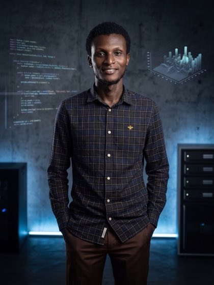

Enterprise Resource Planning (ERP) System
Centralized business operations, improved process visibility, and reduced manual workflows by 45% across 6 corporate departments.
View Details arrow_forwardAs a Full-Stack Software Engineer specializing in AI-powered systems, Business Information Systems, MERN Stack, TypeScript, Laravel, ERP solutions, LIMS, and workflow automation, I transform complex business requirements into intuitive, reliable digital products.

const engineer = new SoftwareEngineer('Francis');
My journey didn't start with a keyboard, but with a chalkboard. Transitioning from education to software engineering has uniquely shaped my perspective on user experience, clarity, and system architecture.
I believe code should be as clear as a well-crafted lesson and as robust as an architectural blueprint. Today, I architect full-stack digital solutions designed to handle complex business requirements cleanly.
Key client engagements engineered for operational efficiency, scalability, and measurable business impact.
Centralized business operations, improved process visibility, and reduced manual workflows by 45% across 6 corporate departments.
View Details arrow_forwardDigitized laboratory workflows, improved operational tracking, and reduced sample processing time by 60% across 3 active laboratories.
View Details arrow_forwardContributed to India's leading online generic medicine platform serving thousands of daily users, implementing customer store locator features and mobile accessibility.
View Details arrow_forwardPlatform synchronizing operational and customer data between e-commerce and marketing platforms for over 200 integrated businesses.
View Details arrow_forwardIndependently delivered a complete reservation and reporting platform, boosting operational efficiency by 80% and supporting 400+ daily customers.
View Details arrow_forwardLed development of key customer, driver, and admin features, improving platform stability and user experience for ~1,000 drivers.
View Details arrow_forwardCustom business platform replacing manual workflows for a spatial and statistical consultancy, reducing administrative effort by 30% for 250+ users.
View Details arrow_forwardDesigned & developed a responsive platform strengthening engagement between institutions in Ghana and Sweden, boosting online visibility by 85%.
View Details arrow_forwardLooking to simplify complex business processes, build scalable digital products, or develop custom enterprise systems? Reach out directly—I'm always open to discussing new engineering projects, consulting, and technical partnerships.